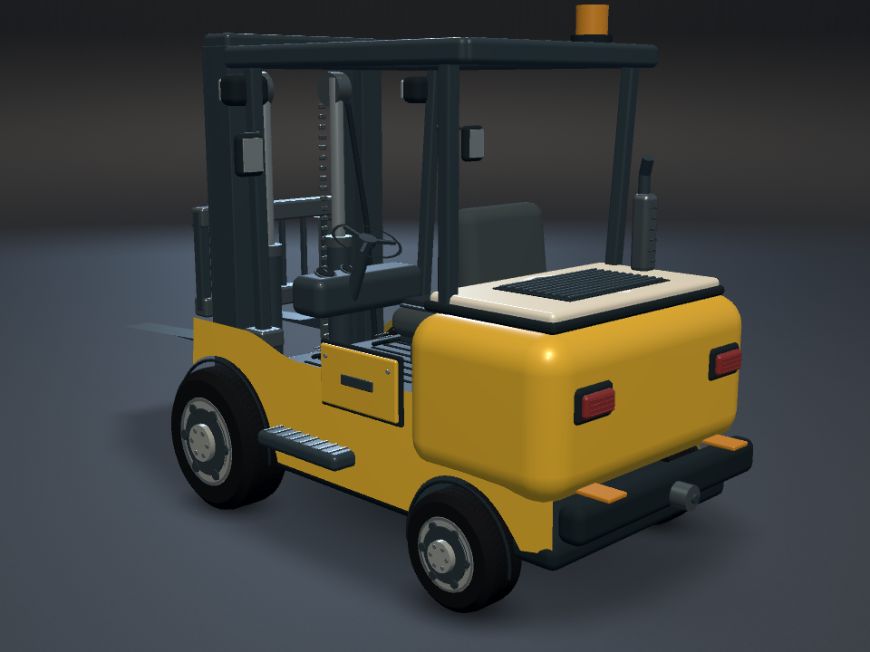
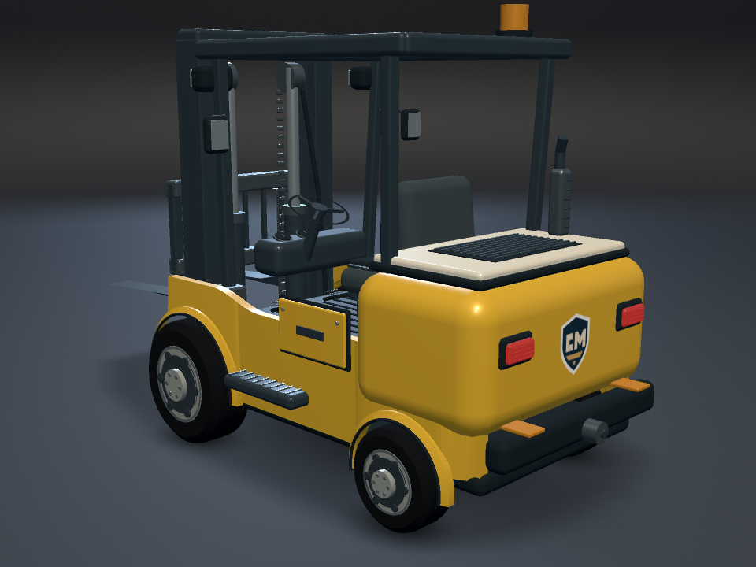
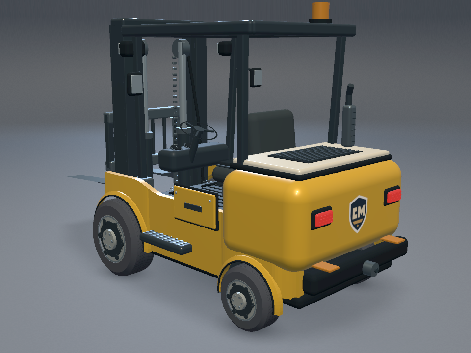
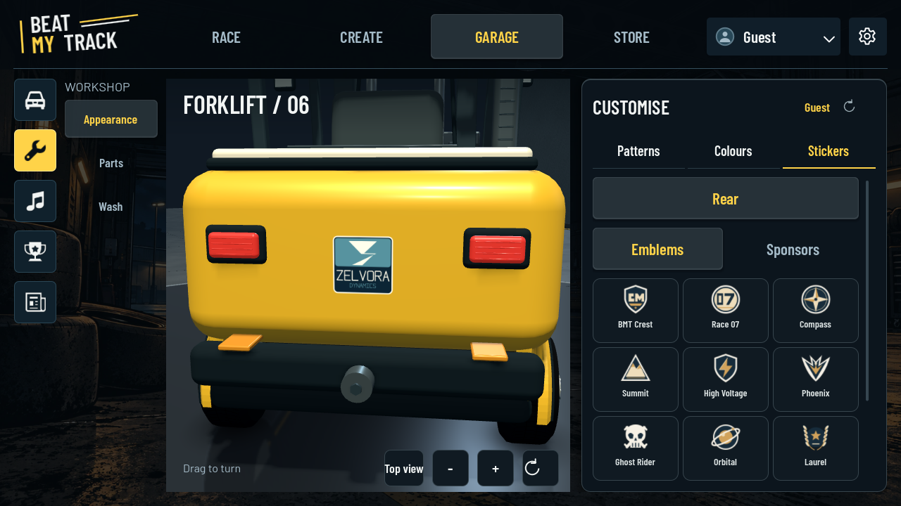
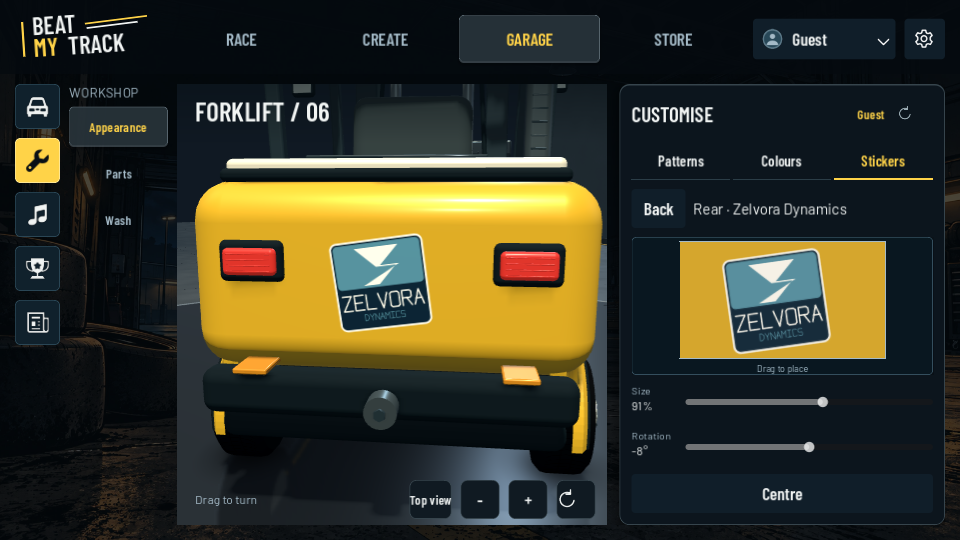
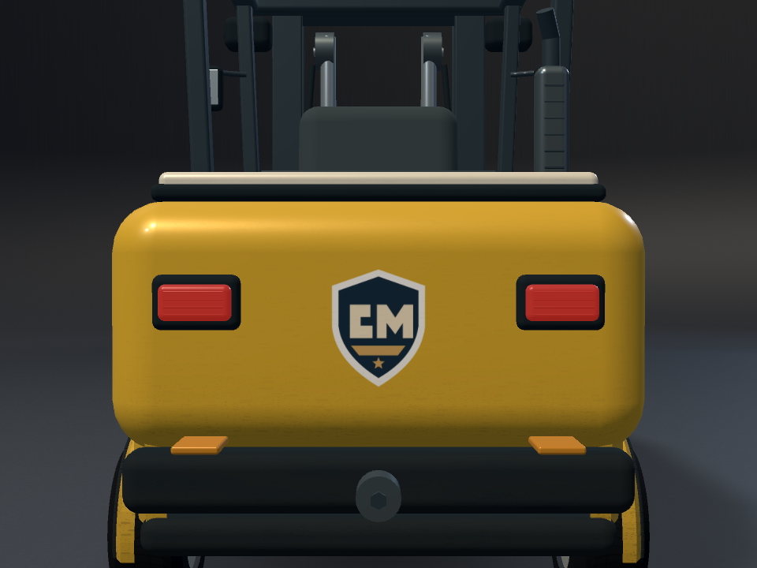

FS01-FS03/R01/Q01. Original saved body versus corrected native production model. No physical-device test performed.
| Check | Result |
|---|---|
| Side/arch shells | Zero open or inconsistent edges in both detail levels |
| Sticker visibility | Rear only; front/side/top comparisons change zero pixels |
| Focused native checks | 59 headless / 77 Compatibility / 78 desktop Mobile; all pass |
| Integration / model batching | 98 headless / 107 with artwork bake; all pass |
Rear placement and all 49 filtered Forklift photos pass. The unchanged broader livery suite retains an existing new-car preview / five-car indexing issue; raw logs and supplemental all-car projection evidence are in the report.






Commands, measurements and limits ? Scoped source patch ? Native asset payload